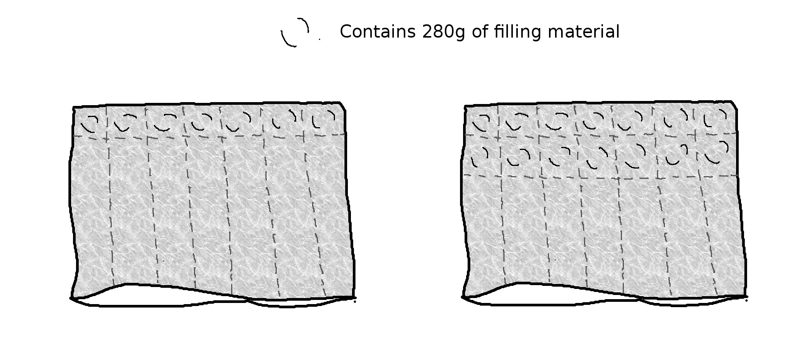

Weighted Blanket DIY
Diese Anleitung gibt es auch auf Deutsch.
Since my diagnosis I know now for sure that fighting overloads doesn’t work. So I often end up hiding under a blanket on the couch or in my bed. Sometimes I listen to music, sometimes even that is too much. It is at those times, when I have to protect myself form the flashing and banging of the world around me, that I have often wished for the blanket to be heavier and less warm. Because no normal blanket can fulfill both those requirements simultaneously, and commercial weighted blankets often cost a fortune, I set out to make my own. After a bit of researching, shopping and handcrafting, I have now also been able to test the result. It is a little bit small (so if you want it to cover you from top to toe consider making the bigger version using 2 blanket covers) but otherwise does the job perfectly!
I wrote this little tutorial for those of you who are also craving for a weighted blanket on a budget. All you need to be able to do is sewing along hand drawn straight lines and weighing filling material. I made a blanket that measured approximately 100 by 140 cm and weighed approximately 10kg. It cost me 68 Chf (Mind you I live in Switzerland so this could certainly also be done cheaper depending on which filling material you use and where you buy it) and a days work (4 to 6 hours, including breaks).
What you need:
- In this tutorial I use 1 blanket cover to make both the weighted blanket itself, which is about half the size of the original cover, and a new cover for it. If you want you blanket to be double the size you need to blanket covers. One you use as is, as a cover, and the other one to make the weighted blanket. For this case, and also if you want to use plain fabric to make your blanket, you will have to change the steps a little bit, but the overall way of working is still the same. Using an existing is easier as you can use the existing seams and closure mechanism (buttons, a zipper, …) so you don’t have to do those yourself. You can buy new blanket covers or use some you already have. I bought my in a thrift shop for 9 Chf.
- A sewing machine. It doesn’t need to be a fancy one, you need just a straight and a zigzag stitch.
- Fabric scissors or other good scissors. (You shouldn’t cut other material than fabric with your fabric scissors, but the other way around is fine)
- Sewing thread. If you can chose, choose the heavy duty or outdoor variety for sturdier seams. Otherwise use any thread you have on stock.
- A ruler. The longer the better (mine was 75 cm, but shorter one works too with a little more effort)
- Filling material. I didn’t feel up to dealing with customs and other shipment trouble and just wanted to start as quickly as possible, so I bought what was on stock in a shop in Switzerland without doing much research on cheaper options when buying abroad. I had a look at natural and synthetic filling materials and decided to use this synthetic granulate. When looking for filling materials you should keep an eye on the density. Other fine grained materials such as millet (the whole grains, not the chaff, because of the density), grape seeds, or rice would also make great filling materials.
- Kitchen scales including bowl. (And maybe a funnel to help with the filling)
Preparation
First you should wash your fabric. New fabrics can shrink when washing them for the first time. And of course you also want your blanket to be clean and smell like your favorite laundry detergent. Wash according to the instructions on the garment or, if there aren’t any, according on how you will wash the cover in the future.
1. The Cover
First turn the cover wrong side out. Then cut it into two halves (the way you would cut a piece of paper from the size A4 into two halves of the size A5). We will use the half containing the closure of the original cover as our new cover. To do this we simply have to close of the side where we just cut. Just sew straight along newly cut edge staying about 0.5 to 1cm away from it. The piece of fabric in between your stitching and the edge is called seam allowance. You can protect your seam from fraying by enforcing your seam allowance with a zigzag stitch. Once you’ve done that, you can turn your new cover right side out again. And then it is done already and you can put it aside.
2. Reinforcing the outer seams
Now let’s make the actual blanket using the other half of our cover. We will add some extra enforcement to the outer seams of our blanket. This will prevent ‘leakage’ of the filling material, even if one seam loosens. This double seaming will cause the wrong side of the fabric to be on the outside of the finished blanket, making it not really nice to look at. This doesn’t matter really as we have made a cover for our blanket already.
First turn this part of the cover right side out again. Then sew all around just left of the existing seam allowance using a straight stitch, creating a so called French seam. Then turn the cover wrong side out again.
3. Measuring and weighing
In this step we will first draw a grid on the fabric and later sew on those lines to create the compartments of the filling material. I chose to have compartments of about 20cm x 20cm. This made 5 x 7 = 35 compartments in total. You can choose whatever compartment size you want that works for your size of blanket. However, I wouldn’t choose too small ones, as this would make it harder to fill them. Between 15 and 20 cm is a great size to work with. Now divide the total weight of your filling material by the number of compartments to obtain the amount of material to fill in each compartment. For me this came to about 280 grams per compartment.
After drawing your grid you should first sew those lines perpendicular to the open side of your cover using a straight stitch. By doing this you create a number of tubes that are open on one side.
4. Filling up row by row

From now on your blanket will get heavier, making it harder to handle the whole thing while sewing. One little corner slipping of the table can quickly tear the whole blanket with it. Also keeping the filling material inside the compartment while sewing it is not always easy. So try to be patient and concentrated for this step.
This is how I did it: Weighing 7 times 280g of the filling material and filling it in each of the 7 fabric tubes using a funnel. Shaking the blanket while holding it with two hands in a way that the open side remains at the top. The filling material is now at the bottom of the tubes inside of the first row of compartments. Then sew on the previously drawn line with a straight stitch to close off the first row of compartments. Repeat this 5 times. Don’t close off the last row yet though, we will use a double seam again here. This is described in the next step.
5. Closing the final seam and trying it out
As with all the other outer seams, we want to reinforce the seam closing of the last row of compartments making it a double seam. I chose to use a very simple method that doesn’t look great, but does the job just fine (The blanket will be in its cover anyway). Here is how it goes: Straight stitch the first seam at about 0.5-1 cm from the outer edge. Repeat this making a second seam another 0.5-1cm away from the first one. Fold the edge so that the folding line is your first seam, laying the first seam allowance on top of the second one. Then sew through all 4 layers of fabric using a zigzag stitch.
Your blanket is now ready! You can put it in its cover and start using it right away.